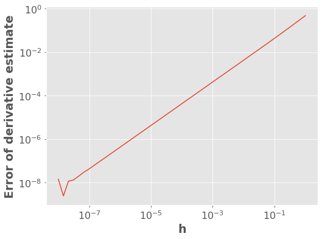
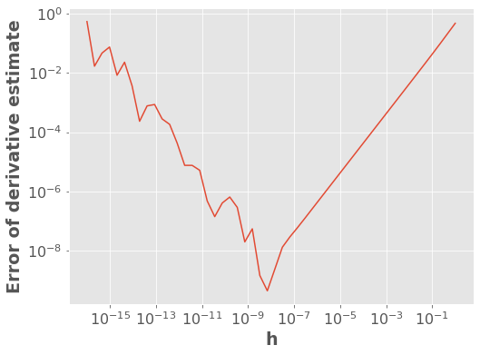
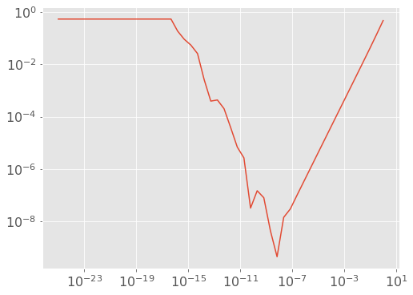
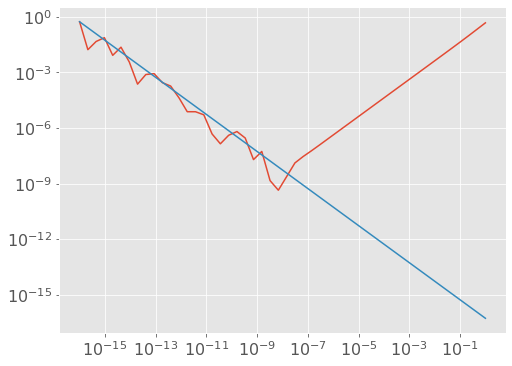

import sklearn
import sklearn.linear_model
import scipy.optimize
import autograd # pip install autograd
from autograd import grad
import autograd.numpy as anp
from scipy.optimize import minimize
import matplotlib.pyplot as plt
plt.style.use('ggplot')
plt.rcParams.update({'font.size': 16, 'axes.labelweight': 'bold', 'figure.figsize': (8,6)})Appendix C — Appendix C: Computing Derivatives

C.1 1. Gradients Introduction
What if we are optimizing a function and we don’t know its derivative/gradient. This could happen because: - You’re optimizing the parameters of a computer simulation - a robot - weather / atmospheric science - financial simulation - etc. - You’re optimizing the hyperparameters of a machine learning algorithm - The derivative is just too much effort to compute and it’s slowing down your prototyping efforts
What to do? Well, there are 3 main approaches to computing derivatives with a computer:
- Symbolic differentiation
- Numerical differentiation
- Automatic differentiation
We’ll explore these different options in this short appendix. Note that this material has been modified after material originally created by Mike Gelbart.
As a running example, consider \(f(x)=\sin(x)\). We know that \(f'(x)\equiv\frac{df(x)}{dx}=\cos(x)\) and thus \(f'(1)=\cos(1)\)
C.2 2. Symbolic Differentiation
Symbolic differentiation is basically what you learned in calculus. We interpret the symbols in an equation and apply the rules of differentiation. Wolfram Alpha is a good tool for this, e.g., https://www.wolframalpha.com/input/?i=derivative+of+sin(x).
Symbolic differentiation is useful but less so when dealing with data. We will not say more about this now. You should be aware of its existence.
C.3 3. Numerical Differentiation (Finite Differences)
A derivative is defined as:
\[\frac{df(x)}{dx} \equiv \lim_{h\rightarrow 0} \frac{f(x+h)-f(x)}{h} \]
Numerical differentiation simply approximates the above using a very small \(h\):
\[\frac{df(x)}{dx} \approx \frac{f(x+h)-f(x)}{h}\]
for small \(h\).
This approach is called “finite differences”. I like to think of it as an estimate of as the “rise over run” estimate of slope. Let’s give it a try!
h = 0.001 # small h
f = np.sin
x0 = 1
dfdx = (f(x0 + h) - f(x0)) / h
dfdx0.5398814803603269np.cos(x0)0.5403023058681398Not bad!
C.3.1 3.1. Error of Derivative Estimates
Numerical error arises from the discretization inherent finite difference approximations. Let’s explore this a bit. What do you think will happen to the absolute error of the estimate of the derivative if I change \(h\)?
f = lambda x: np.sin(x)
dfdx_estimate = lambda h: (f(x0 + h) - f(x0)) / h
dfdx_true = np.cos(x0)
abs_error = lambda h: np.abs(dfdx_estimate(h) - dfdx_true)
h = 10 ** (np.linspace(-8, 0))
plt.loglog(h, abs_error(h))
plt.xlabel("h")
plt.ylabel("Error of derivative estimate");
The above plot says that the error between our estimate and the true derivative grows as \(h\) gets bigger. Makes sense, right? But the plot thickens when we look at very small values of \(h\)…
h = 10 ** (np.linspace(-16, 0))
plt.loglog(h, abs_error(h))
plt.xlabel("h")
plt.ylabel("Error of derivative estimate");
Wait… what?
When \(h\ll 1\) we have that \(\left| f(x+h)-f(x) \right| \ll 1\). This leads to roundoff errors. Is it underflow?
h = 10 ** (np.linspace(-25, 0))
plt.loglog(h, abs_error(h));
Well that flat part is underflow (estimate of the derivative is exactly zero). But what’s up with the part in between, from \(h=10^{-16}\) to \(10^{-7}\)?
The problem is regular old roundoff error related to floating point number precision. Roughly speaking, the magnitude of these roundoff errors is independent of \(h\) (e.g. when computing \(f(x)\) it has nothing to do with \(h\)), and so the \(h\) in the denominator causes \(\frac{1}{h}\)-like behavior. We can test this with a line, using our friend \(10^{-16}\).
h = 10 ** (np.linspace(-16, 0))
plt.loglog(h, abs_error(h))
plt.loglog(h, 1e-16 * dfdx_true / h);
We’ve seen a bunch of plots, but what have we actually learned? Well:
- the numerical approximation to the derivative initially increases as \(h\) gets smaller (this effect is linear in \(h\))
- however, when \(h\) is too small then roundoff error kicks in and the error starts to increase (this effect is linear in \(1/h\))
What you really need to know: picking \(h\) is tricky: it can’t be too big or too small.
C.3.2 3.2. Gradients
So, what about gradients?
\[\nabla f(x) = \begin{bmatrix} \frac{\partial f}{\partial x_1} \\ \frac{\partial f}{\partial x_2} \\ \vdots \\ \frac{\partial f}{\partial x_d} \end{bmatrix}\]
Well, we can approximate each partial derivative as:
\[\frac{\partial f(x)}{\partial x_1} \approx \frac{f(x+h e_1)-f(x)}{h}\]
where \(e_1 = \begin{bmatrix}1 \\ 0 \\ 0 \\ \vdots \\ 0 \end{bmatrix}\).
In general:
\[\frac{\partial f(x)}{\partial x_j} \approx \frac{f(x+h e_j)-f(x)}{h}\]
where \(e_j\) is \(1\) at position \(j\) and zero elsewhere.
Put another way (if this helps),
\[\frac{\partial f(x)}{\partial x_1} \approx \frac{f\left(\begin{bmatrix}x_1 + h \\ x_2 \\ x_3 \\ \vdots \\ x_d \end{bmatrix} \right)-f(x)}{h}\]
\[\frac{\partial f(x)}{\partial x_2} \approx \frac{f\left(\begin{bmatrix}x_1 \\ x_2 + h \\ x_3 \\ \vdots \\ x_d \end{bmatrix} \right)-f(x)}{h}\]
And so on and so forth.
C.3.3 3.3. Cost of Estimating a Gradient
As you can see above, estimating a gradient requires \(d+1\) function evaluations. That can be expensive - perhaps \(d\) is \(1000\) or \(10000\). If you can compute the gradient symbolically, that is much better.
C.3.4 3.4. (Optional) Other Finite Difference Formulas
There are better finite differences formulas than the one we are using, such as the centered difference formula:
\[\frac{df(x)}{dx} \approx \frac{f(x+h)-f(x-h)}{2h}\]
In this case the error goes down as \(h^2\), which is great, but most of the benefits come in applications that don’t concern us here (e.g., solving differential equations). However, in \(d\) dimensions, this requires \(2d\) evaluations of the function instead of \(d+1\), because with the forward difference formula (the original one above) we reuse the point \(f(x)\) for all the partial derivatives. Really, which formula you use depends on what you’re doing.
If you’re really bored, you can also check out the complex step method.
C.3.5 3.5. Summary
If we can’t figure out the derivative of a function, but have code that computes the function, we can approximate the derivative using finite differences. This works pretty well but there are some pitfalls. In particular you need to choose \(h\) carefully and it costs \(O(d)\) function evaluations to estimate a gradient. It seems better to actually know the derivative if possible, because the computations will be faster and more accurate.
C.4 4. Automatic Differentiation
Automatic differentiation (AD) is another way to take the derivative given some code that computes \(f\). It is advertised as the “best of both worlds” between symbolic and numerical differentiation: - Pro: takes the code as input, not math. - Pro: does not have the problem of choosing \(h\), or the extra \(O(d)\) cost. - Con: some AD software packages have limitations, hurt code readability. - Con: large space complexity.
There are two main types of AD, forward mode and reverse mode AD. We’ll be discussing reverse mode here. Basically, AD keeps track of the gradient of primitive operations and uses the chain rule to link them together. We’ll use a package called AutoGrad to demo AD.
Demonstration 1: \(\sin(x)\)
anp.cos(1.0)0.5403023058681398grad(anp.sin)(1.0)0.5403023058681398What happened above is that AutoGrad’s grad takes in a Python function, and returns another Python function that computes the gradient.
Some more examples:
x = anp.random.rand(4)
def foo(x):
return anp.sum(x)
def foo_grad(x):
return anp.ones(len(x)) ## SOLUTION
foo_grad(x)array([1., 1., 1., 1.])foo_grad_AD = grad(foo)
foo_grad_AD(x)array([1., 1., 1., 1.])def pin(x):
return anp.sin(x[1])
def pin_grad(x):
grad = anp.zeros(len(x)) ## SOLUTION
grad[1] = anp.cos(x[1])
return grad
pin_grad(x)array([0. , 0.9779244, 0. , 0. ])pin_grad_AD = grad(pin)
pin_grad_AD(x)array([0. , 0.9779244, 0. , 0. ])As you can see above, Autograd knows how to deal with things like np.sum, np.abs, subtraction, addition, etc. But let’s make sure it wasn’t cheating and just doing numerical differentiation!
def pin(x):
print("Evaluated function!") # let us know what it's doing
return anp.sin(x[1])
def pin_grad(x):
grad = anp.zeros(len(x)) ## SOLUTION
grad[1] = anp.cos(x[1])
return gradIf it were doing numerical differentiation, it would need to evaluation the function \(d+1\) times (5 times in this case), like this:
scipy.optimize.approx_fprime(x, pin, 1e-6) # do numerical differentiationEvaluated function!
Evaluated function!
Evaluated function!
Evaluated function!
Evaluated function!array([0. , 0.9779243, 0. , 0. ])pin_grad_AD = grad(pin) # automatic differentiation
pin_grad_AD(x)Evaluated function!array([0. , 0.9779244, 0. , 0. ])Looks like it’s not doing numerical differentiation! Bam!
def baz(x):
result = 0
for i in range(len(x)):
result = result + x[i]**i
return result
def baz_grad(x):
result = [0] ## SOLUTION
for i in range(1,len(x)):
result.append(i*x[i]**(i-1))
return result
baz_grad(x)[0, 1.0, 0.8561805793442914, 0.008334506453204469]baz_grad_AD = grad(baz) # differentiate through `for` loops!
baz_grad_AD(x)array([0. , 1. , 0.85618058, 0.00833451])def bar(x):
if anp.abs(x[1]) > 2:
return 0
else:
return -(x[0] * x[0] + 1) * anp.cos(x[1] - 1)
def bar_grad(x):
if anp.abs(x[1]) > 2: ## SOLUTION
return anp.zeros(len(x))
else:
result = 0 * x
result[0] = -2 * x[0] * anp.cos(x[1] - 1)
result[1] = (x[0] * x[0] + 1) * anp.sin(x[1] - 1)
return result
bar_grad(x)array([-1.09518376, -1.13930008, 0. , 0. ])bar_grad_AD = grad(bar) # differentiate through `if` statements!
bar_grad_AD(x)array([-1.09518376, -1.13930008, 0. , 0. ])As an additional demo, let’s try robust regression with the Huber loss (whose derivative I don’t really feel like dealing with):
d = 10
n = 1000
# generate random data
X = anp.random.randn(n, d)
w_true = anp.random.randn(d)
y = X @ w_true
# add random outliers
Noutliers = 50
y[:Noutliers] += 100 * anp.random.randn(Noutliers)
w_truearray([ 0.58231171, -0.07432767, -0.44828741, -0.16104079, -1.9348398 ,
1.1971574 , 1.54178319, -0.07784519, 1.86594288, -0.56552392])from sklearn.linear_model import HuberRegressor
hr = HuberRegressor(fit_intercept=False, alpha=0)
hr.fit(X, y)
hr.coef_array([ 0.58231172, -0.07432767, -0.44828741, -0.16104082, -1.93483981,
1.19715741, 1.5417832 , -0.07784521, 1.86594288, -0.56552394])huber = lambda z: 0.5 * z ** 2 * (anp.abs(z) <= 1) + (anp.abs(z) - 0.5) * (anp.abs(z) > 1)
f = lambda w: anp.sum(huber(X @ w - y))Okay here we go:
df_dw = grad(f) # differentiate through matrix multiplications, etc.w = np.zeros(d)
alpha = 0.001
while anp.linalg.norm(df_dw(w)) > 0.0001:
w -= alpha * df_dw(w)
warray([ 0.58501101, -0.07144062, -0.4559222 , -0.15739645, -1.94802414,
1.18996671, 1.52951647, -0.08104441, 1.8759754 , -0.56918479])Nice! (They are not exactly the same because of epsilon hyperparameter in HuberRegressor.)
C.4.1 4.1. Do I Never Need to Take a Derivative Again?
Hopefully not? There are production-grade automatic differentiation systems, like those used in TensorFlow or PyTorch so you may never have to worry about taking a derivative ever again.